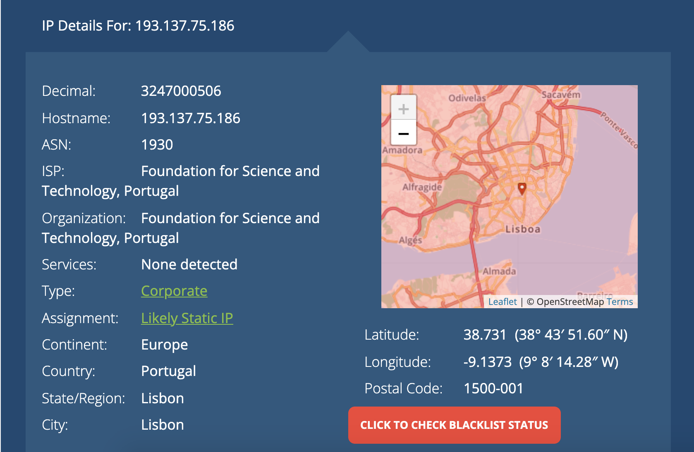
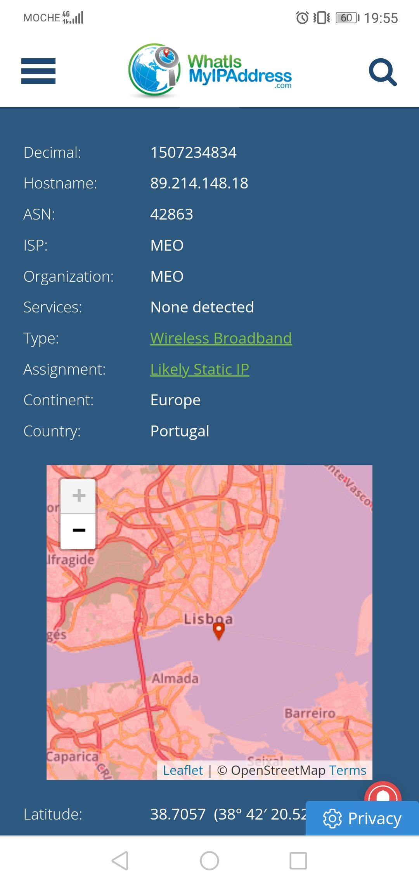
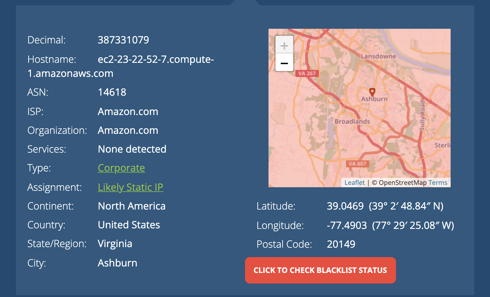
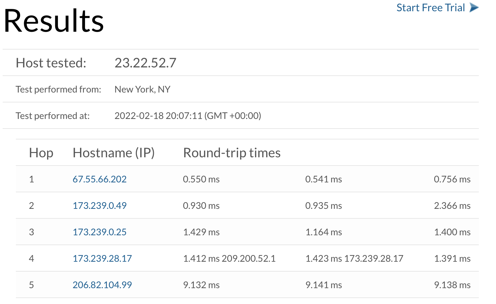
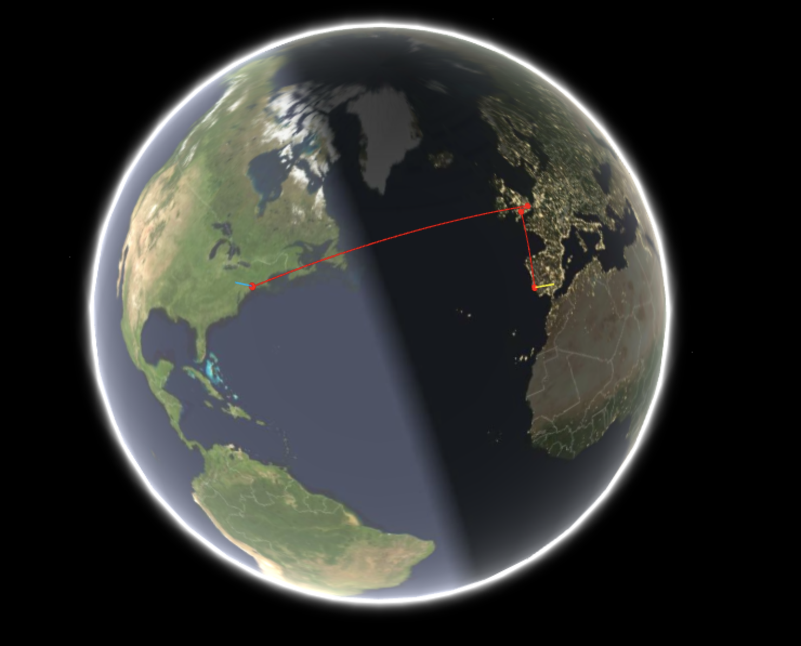

Programação Web A Internet e a Web
Observei o meu ip púbico via wi-fi, que é 193.137.75.186.
E observei o meu ip público via dados móveis que é 89.214.148.18.
Pode-se verificar que apesar de estar na mesma localização o wifi é muito mais preciso do que os dados móveis.
Observei também o ip do meu website em heroku, que é 23.22.52.7.
Ao fazer o tracert até ao meu website obtenho o seguinte resultado:
Este tracert observado graficamente ficaria:
